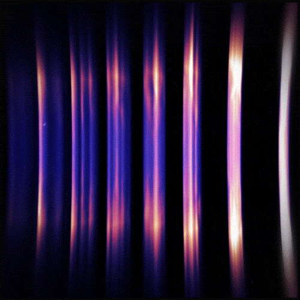
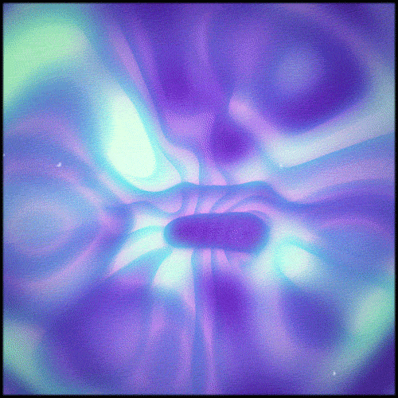
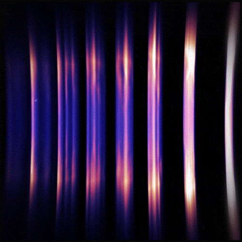
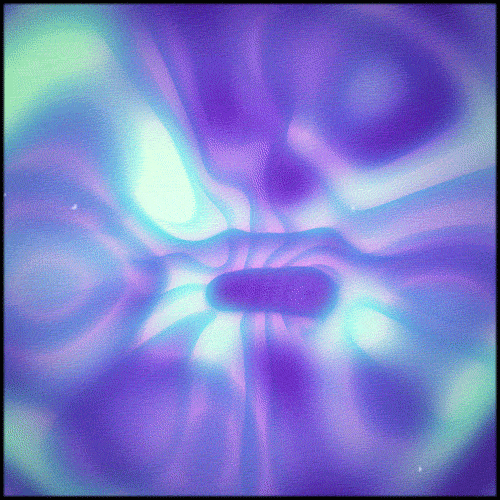

Talleres, podcasts o espacios de indagación guiada
🌍 LO QUE EL MUNDO NECESITA
PUENTES ENTRE TECNOLOGÍA Y CONCIENCIA
Puentes entre tecnología y conciencia
CREATIVIDAD CON ÉTICA
Creatividad con ética y propósito
EXPERIENCIAS QUE SANEN
Experiencias digitales que sanen y no solo vendan
RELATOS CON SENTIDO
Relatos que den sentido al caos, a la herida, al vacío
REFERENTES MASCULINOS SENSIBLES
Referentes masculinos sensibles, auténticos y vulnerables
HERRAMIENTAS PARA EL PRESENTE
Herramientas que nos devuelvan al presente, a lo natural
EDUCACIÓN EMOCIONAL
Educación emocional y espiritual con lenguaje moderno
DISEÑADORES DE REALIDAD
Diseñadores de realidad que integren la sombra y la luz
✨ TU IKIGAI
CREAR EXPERIENCIAS QUE RECONECTEN CON LA ESENCIA
Estoy aquí para crear experiencias digitales, narrativas y sensoriales que reconecten al ser humano con su esencia.
Combino mi sensibilidad como artista, mi visión como narrador y mi formación técnica como desarrollador para construir puentes entre lo funcional y lo profundo.
Mi propósito es usar la tecnología como instrumento de sanación, belleza y conciencia.
Todo lo que creo busca tocar el alma, despertar preguntas y abrir caminos hacia la verdad interior.
🧭 TU BRÚJULA VITAL
🌿 Si lo que haces no te acerca al silencio interior, al asombro y a la honestidad, no es por ahí.
💡 Si lo que creas no transforma ni conmueve, es solo un producto, no una obra.
🛠️ Si tu talento no está al servicio de lo humano, se volverá contra ti.
🔥 Si algo te quema por dentro, síguelo. Pero intégralo con orden, claridad y estrategia.
 


